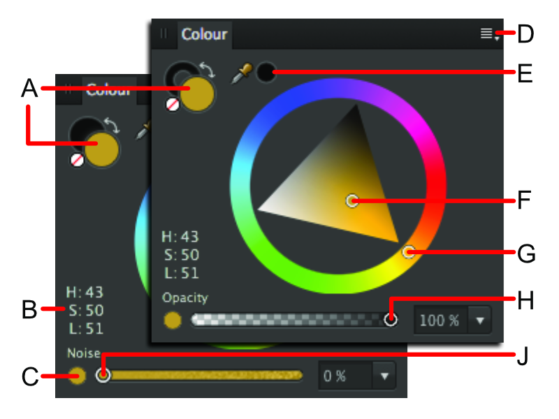

Панель Цвет используется для выбора цвета для различных инструментов и выбранных объектов.
О панели «Цвет»
Панель «Цвет» можно использовать в нескольких цветовых режимах: HSL, RGB, CMYK и LAB. При этом параметры цвета также можно задавать разными способами: с использованием цветового круга (только HSL), палитр и ползунков. Оттенки цвета также можно применять с помощью этой панели.

Панель «Цвет» (цветовой круг HSL). A — цвет 1 / цвет 2 (слева) или селекторы цветов обводки / заливки с образцом цвета «Нет» и стрелкой «Поменять местами»; B — значения HSL; C — переключение на непрозрачность / шум; D — установки панели; E — инструмент «Пипетка» и выбранный образец цвета; F — элемент управления насыщенностью / светлотой; G — элемент управления цветовым оттенком; H — элементы управления непрозрачностью; J — элементы управления шумом.
Аналогично панели Образцы, панель «Цвет» меняет внешний вид в зависимости от активного режима и выбранного инструмента. Большие селекторы цветов указывают на текущие выбранные цвета.
В режиме «Рисование» объекты имеют свойства цвета заливки и обводки. Цвет обводки представлен в виде контура селектора цвета (кольца). Цвет заливки представлен в виде селектора со сплошным цветом.
В режиме «Пиксельный» на панели отображаются цвета, представленные двумя селекторами со сплошным цветом. Они соответствуют цвету 1 (передний план) и цвету 2 (задний план).
Селектор активного цвета отображается спереди по сравнению с двумя другими селекторами цветов. При выборе нового цвета он применится к селектору активного цвета.
Ниже представлены селекторы цветов, отображаемые для векторных и пиксельных инструментов.
Активный цвет — это любой цвет, который отображается спереди по сравнению с другими цветами. На этой иллюстрации селектор активного цвета соответствует: A — обводке; B — заливке; C — цвету 1 (передний план); D — цвету 2 (задний план). Можно быстро переключить селекторы цветов, нажав X .
Использование панели «Цвет»
Нажав несколько кнопок на панели «Цвет», можно задать цвет для инструмента или применить цвета к объекту. Кроме того, можно применять дополнительные атрибуты цвета, например непрозрачность и шум.
Чтобы задать цвет селектора, выполните указанные ниже действия.
Нажмите селектор, к которому хотите применить цвет. Он отобразится спереди по сравнению с двумя другими селекторами цветов.
Выполните одно из перечисленных ниже действий.
Выберите цвет с помощью круга (только HSL), ползунков или палитр цветовой модели.
Нажмите выбранный образец цвета.
Чтобы сделать цвет полностью прозрачным (для инструмента, заливки или обводки), нажмите образец цвета Нет.
Для переключения цветов селекторов выполните указанные ниже действия.
Нажмите двунаправленную стрелку. Цвета поменяются местами (но активный селектор образца не изменится).
Чтобы отрегулировать непрозрачность или настроить параметры шума, выполните указанные ниже действия.
Нажмите кнопку переключения параметров в нижней левой части панели.
Перетащите ползунок для того, чтобы установить значение.
Установки выбора цвета и цветовые модели
На панели «Цвет» можно выбирать цвета из разных установок выбора цвета и значений по цветовым моделям. В меню «Установки панели» можно изменить установки выбора цвета.
В зависимости от выбранной цветовой модели можно выбрать режим 8 бит, 16 бит или Процент.
При некоторых способах выделения можно задать цвет, используя значения других цветовых моделей, помимо RGB. При этом рабочий цветовой профиль документа не изменяется, но изменяются введенные значения цветов.
В меню «Установки панели» доступны приведенные далее установки выбора цвета.
Круг — цветовой круг HSL
Потяните за внешнюю окружность, чтобы задать оттенок.
Потяните за треугольник, чтобы задать насыщенность и светлоту.
Ползунки — RGB, HSL, CMYK, LAB, «Оттенки серого»
Выберите цветовой режим во всплывающем меню.
(Необязательно) На панели «Установки панели» выберите 8 бит, 16 бит или Процент.
Чтобы установить значения цветов, перетаскивайте ползунки или вводите значения в соответствующие поля.
Палитры: только для параметров «Цветовой тон», «Насыщенность» и «Светлота».
Цветовой тон: перетаскивайте ползунок, чтобы задать цветовой тон; перетаскивайте курсор по палитре, чтобы задать значения насыщенности и светлоты.
Насыщенность: перетаскивайте ползунок, чтобы задать насыщенность; перетаскивайте курсор по палитре, чтобы задать значения цветового тона и светлоты.
Светлота: перетаскивайте ползунок, чтобы задать светлоту; перетаскивайте курсор по палитре, чтобы задать значения насыщенности и цветового оттенка.
Оттенок
Перетаскивайте ползунок для регулирования оттенка цвета. Чем левее расположен ползунок, тем меньше чернил наносится на страницу.
Использование инструмента «Пипетка»
С помощью инструмента «Пипетка» можно брать образцы цвета в пределах или за пределами документов Affinity Designer, а затем использовать их в композиции.
Для использования инструмента «Пипетка» выполните указанные ниже действия.
Перетащите значок Пипетка на цвет, образец которого вы хотите взять.
Нажмите селектор, к которому хотите применить цвет.
Чтобы применить цвет, нажмите образец рядом со значком Пипетка.
Сохранение выбранных цветов для дальнейшего использования
Если цвет выбран и применен к инструменту или объекту, его можно сохранить для дальнейшего использования несколькими способами.
В меню «Установки панели» доступны приведенные далее параметры.
Копировать цвет в буфер обмена в виде шестнадцатеричного кода: служит для определения шестнадцатеричного кода текущего цвета и помещения значения в буфер обмена. Это полезная функция для веб-разработчиков, которым необходимо добиться соответствия между цветами графического изображения и их HTML-кодами для веб-среды.
Добавить цвет в образцы: используется для добавления текущего цвета в загруженную палитру на панели «Образцы».
Всплывающее меню Добавить хорду в образцы: используется для добавления хорды текущего цвета в загруженную палитру на панели «Образцы».